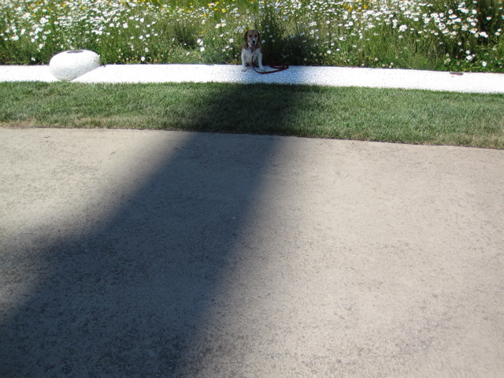

<--Previous Up

Shadow of the sundial
Since we were there close to the day of the year for which the sundial is calibrated (the summer solstice, June 21st), the time on the sundial was close to accurate. Huxley is escaping Redding's broiling sun a little to the right of the white knob which marks 2 PM. Behind me, half the population of Redding was doing the same along the 30-yard length of the shadow.